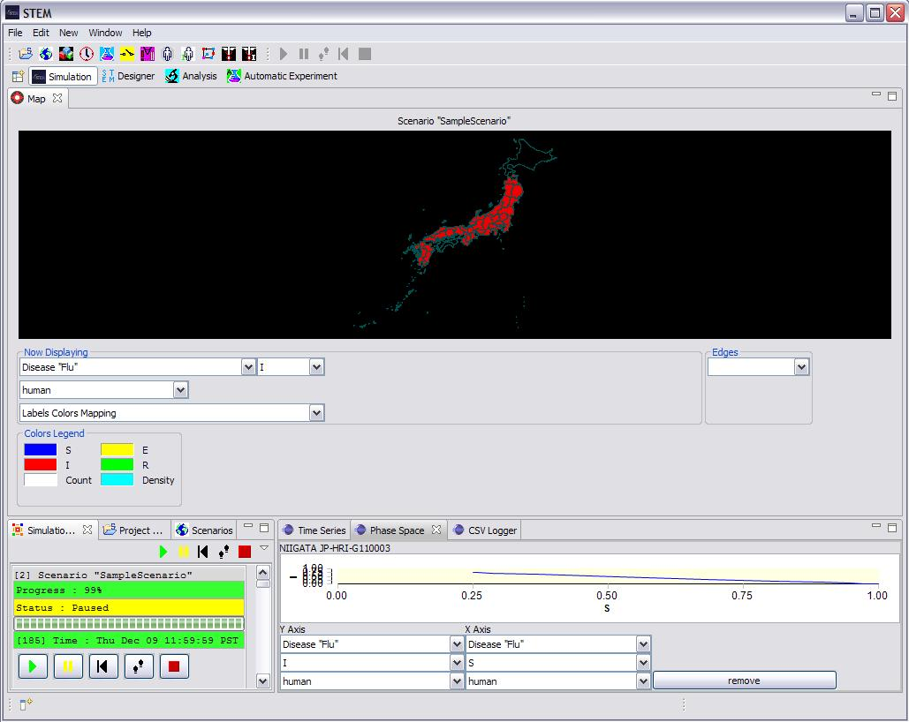

The current distribution of STEM provides users with configurable run time Report Views with which to study running simulations. In the current distribution the available reports are:
All STEM views are create using the Eclipse Business Intelligence Reporting Tool (BIRT).
The Report Views complement the various Map visualization views. While the Map gives a qualitative visualization of a running simulation (e.g. a spreading infectious disease), the Report Views provide more quantitative information about the simulation state either at specific locations or aggregated a different levels.
1) Loading the Report Views
To load or activate the reports, first launch (and run) stem. Then, on the top menu bar click on
>window>other...>Time Series
Select it. Go back to the top menu bar and click on
>window>other...>Phase Space
This will open two different BIRT Report Views. Other views would be activated in the same way.
2) Starting the Report Views
Next go to the scenarios tab and expand
->STEM->Geography->Political->Country->Japan
double click on the built in scenario
Pandemic Demo, Tokyo, Japan, 2000
to start it.
|
|
|
Figure 1: Running the built in Japan Scenario with the TimeSeries view displayed below the map. |
3) Adding and removing locations to Monitor
Look at the time series and phase space views.
You will probably see a single chart which should show the data for all of
Japan. If you click on any location on the map, a new report will be added
for that new location. In this release clicking on the map will generate a
new report of every type that is currently loaded (e.g., both Time Series
and Phase Space reports will be added for that location if they are both
active). In the future we will add a selector so map clicking will generate
user specified types of new reports.
Keep clicking on the map to get new reports. T
To remove a report simply click the remove
button in the report window.
4) Remembering User preferences
The STEM report views use Eclipse DialogSettings to automatically remember user preferences. This feature is always enabled and begins as soon as you enable any report view. The preferences that are "remembered" are the map locations the user was most recently monitoring with one or more report views. Preferences are stored independently for each type of report so the system will allow (and remember) that the user wishes to monitor, for example, one set of locations with Time Series reports and another set of locations with Phase Space reports. The users preferences are stored on disk in a directory:
...\runtime-stem.product\.metadata\.plugins\org.eclipse.stem.ui.reports
where the directory \runtime-stem.product is located in the same parent directory as the users STEM eclipse workspace (for example c:\runtime-stem.product).
Preferences for the Time Series views are stored in a file:
TimeSeries_Preferences.txt
Preferences for the Phase Space views are stored in a file:
PhaseSpace_Preferences.txt
5) Configuring the TimeSeries Report
On the lower left hand side of every TimeSeries Report view window are two combo boxes one atop the other. If a simulation is running, the top combo box allows a user to take data from different "decorators" that exist at selected locations. In most cases the user will be running only one disease at a time and there will be only one location decorator to chose from (the running disease). In general one can configure scenarios in STEM to simultaneous run multiple diseases in which case one can examine the state of each disease in turn via this to combo box.
The bottom combo box is not used by the TimeSeries Report. The bottom combo box shows the different "labels" processed by the selected decorator. For a particular disease model these labels might include, for example,
S - the population fraction Susceptible (0.0 <= S <= 1.0)
E - the population fraction Exposed (0.0 <= E <= 1.0)
I - the population fraction Infectious (0.0 <= I <= 1.0)
R - the population fraction Recovered (0.0 <= R <= 1.0)
Rather than display only a single variable or label S, E, I, or R, the Time Series viewer simultaneously displays multiple labels for the selected decorator in configurable colors. See the colored lines in Figure 1. By default the labels displayed in the Time Series view are S, E, I, and R in Blue, Yellow, Red, and Green respectively. If these labels do not exist in the selected decorator then the STEM report view will attempt to render every label for which relative values (0->1) are defined. The default color (blue) would be used.
6) Configuring the Labels and Colors
To configure or change the default labels and colors displayed in the Time Series view, go to the top menu bar and select
>Window>preferences
a dialog will open. On the left hand side expand ->STEM -> Visualization
and click on visualization. The displayed labels and their associated colors may be changed in this dialog. See Figure 2 below.
|
|
| Figure 3: The Default Labels and Colors may be configured in the view preferences (see text). |
Please note, you must specify only valid label values for a running model. If you type a label name that does not exist (e.g., X) the Report Viewer will not find that label or associated values to plot. If you are using one of STEMs built in Models it will not be necessary to change these default values.
7) Configuring the PhaseSpace Report
On the lower left hand side of every PhaseSpace Report view window are four combo boxes. The left hand pair (one atop the other) determine the y-axis value displayed. The right hand pair (one atop the other) determine the x-axis value displayed.. If a simulation is running, both top combo boxes allows a user to take data from different "decorators" that exist at selected locations. In most cases the user will be running only one disease at a time and there will be only one location decorator to chose from (the running disease). The two bottom combo boxes allow the user to select among the different "labels" processed by the selected decorator. As discussed above, for a particular disease model these labels might include, for example, S, E, I, and R. The PhaseSpace view allows one to view the "trajectory" of one system variable plotted against another in a phase space of two variables. Typically epidemiologist will plot I(t) vs S(t). Not that time is not an explicit axis label in this view. Rather the resulting curve represents the trajectory of I vs S in time.
|
 |
|
Figure 4: Running the built
in Japan Scenario with the PhaseSpace view |
8) For Code Developers
All of the source code for the Report Viewers may be found in the STEM package:
org.eclipse.stem.ui.reports.views